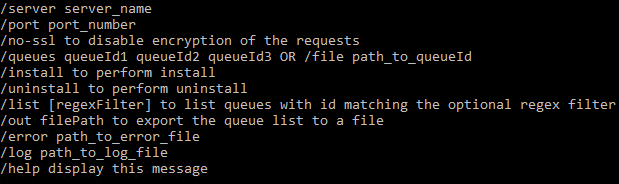

Qu'est-ce qu'un WES ?
WES (Watchdoc Embedded Solution) désigne l'interface Watchdoc embarquée sur les périphériques d'impression, interface qui permet aux utilisateurs de disposer des fonctionnalités de Watchdoc directement sur le périphérique en plus de l'interface accessible Watchdoc via un navigateur web (Page "Mon compte").
Les WES, développés par Doxense®, sont spécifiques à chaque marque et modèle de périphérique des constructeurs avec lesquels Doxense® a établi des partenariats technologiques.
Qu'est-ce que le WESInstallClient ?
Le WES InstallClient est un outil conçu par Doxense® permettant d'installer des WES sur plusieurs périphériques simultanément, une fois qu'ils ont été configurés sur leur(s) file(s) d'impression.
Cet utilitaire en ligne de commande envoie des instructions au serveur Watchdoc afin d'installer les WES.
WESInstallClient.exe est disponible par défaut dans le package d'installation de Watchdoc (C:\Program Files\Doxense\Watchdoc\WESInstallClient.exe).
Cet utilitaire peut être lancé depuis le serveur sur lequel doivent être installés les WES ou depuis un autre serveur s'il peut se connecter en réseau au serveur sur lequel est doivent être instalés les WES.
Prérequis organisationnels
Avant de lancer l'installation à l'aide de WESInstallClient, vérifiez les prérequis suivants :
-
les périphériques sont allumés mais inutilisés le temps de l'installation ;
-
les files d'impression sont déclarées sur le serveur et dans Watchdoc ;
-
un profil WES est associé à chaque file sur laquelle le WES doit être installé.
Liste des arguments
Les arguments suivants peuvent être utilisés dans les commandes :
-
/server server_name : permet d'indiquer le nom du serveur sur lequel sont installées les files d'impression ;
-
/port port_number : permet d'indiquer le numéro de port par lequel accéder au serveur (faculatif) ;
-
/login : permet d'indiquer un compte habilité à administrer (ou à maintenir) le serveur ;
-
/password : permet d'indiquer le mot de passe correspondant au login saisi ;
-
/no-ssl : permet de désactiver la sécurisation des requêtes à l'aide du protocole SSL ;
-
/queues queueId1 queueId2 queueId3 : permet de lister les files d'impression sur lesquelles installer le WES ;
-
ou /file path_to_file: permet d'indiquer que l'installation du WES doit être opérée sur toutes les files d'impression figurant dans le fichier spécifié ;
-
/install : permet de procéder à l'installation du WES sur les files ;
-
/uninstall : permet de procéder à la désinstallation du WES sur les files;
-
/list : permet de lister les files d'impression installées sur le serveur ;
-
/out filepath : permet d'exporter la liste des files dans un fichier ;
-
/error path_to_error : permet de lister les erreurs dans un fichier spécifique ;
-
/log path_to_log_file : permet de tracer les opérations effectuées sur les files dans un fichier spécifique ;
-
/help : affiche la liste des arguments disponibles :
